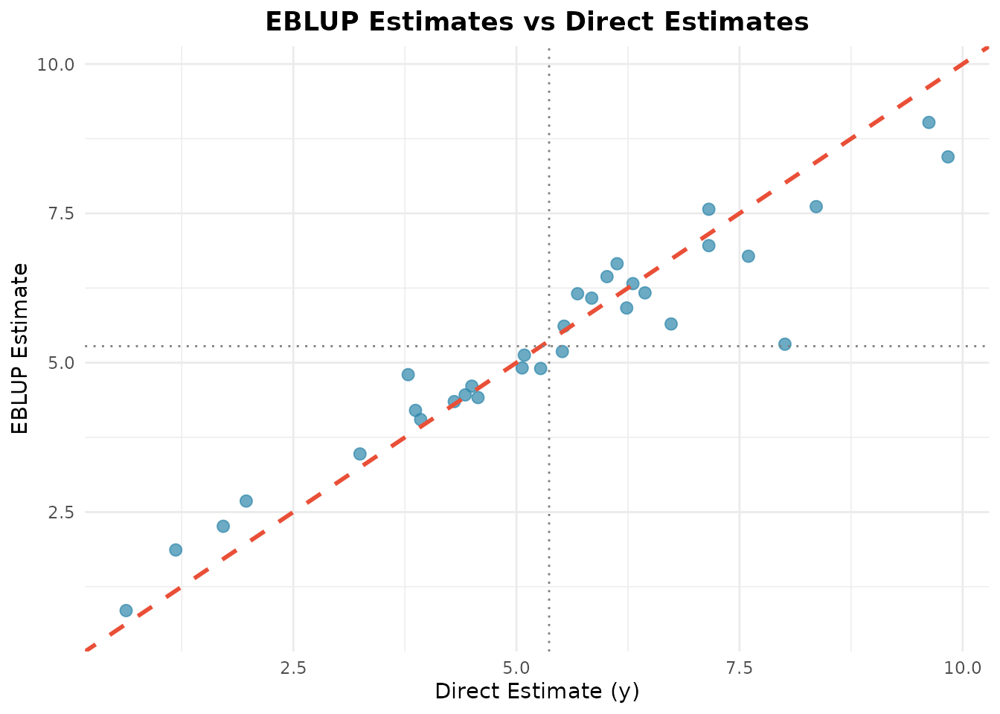
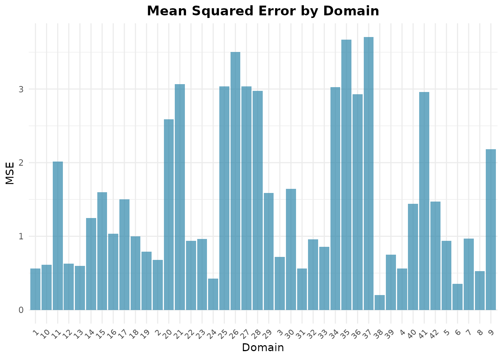

Terjemahan dari versi bahasa Inggris. Penjelasan istilah ada di Daftar Istilah.
Pendahuluan
Small Area Estimation (SAE) mencakup teknik-teknik statistika untuk menghasilkan estimasi yang andal bagi subpopulasi atau domain geografis yang ukuran sampelnya terlalu kecil bagi direct estimator survei untuk mencapai presisi yang dapat diterima.
Paket fastsae mengestimasi model EBLUP frequentist
dalam C++ terkompilasi (melalui Rcpp,
RcppArmadillo, dan RcppEigen) serta
hierarchical Bayes model dengan INLA. Paket ini menawarkan:
- Komputasi cepat: Fisher scoring dan perhitungan MSE dalam C++ terkompilasi, dengan sparse linear algebra untuk model spatial.
-
Kesesuaian dengan
sae: bila kedua paket memakai metode yang sama, estimasi, variance component, dan analytical MSE sesuai dengansaehingga galat pembulatan (ditunjukkan di bawah untuk model Fay-Herriot). Pengecualian yang terdokumentasi menyangkut model spatial: spatial correlation yang diestimasi di batas ruang parameter, dan MSE pada model yang diestimasi dengan ML (lihat?eblup_sfh). -
Antarmuka S3 modern: terintegrasi dengan metode
baku R (
summary(),coef(),fitted(),residuals(),autoplot()).
Model Fay-Herriot
Area-level model yang diperkenalkan oleh Fay dan Herriot (1979) menghubungkan direct estimator survei bagi parameter area dengan auxiliary variable :
dengan:
- adalah random effect spesifik domain.
-
adalah sampling error dengan sampling variance
yang diketahui (
vardir).
Empirical Best Linear Unbiased Predictor (EBLUP) adalah kombinasi terboboti antara direct estimator dan synthetic estimator regresi:
dengan adalah shrinkage factor () dan adalah generalized least squares estimator. Area tanpa direct estimator ( hilang) memperoleh synthetic estimator .
MSE dari EBLUP diestimasi dengan aproksimasi orde kedua (Prasad dan Rao, 1990; Datta dan Lahiri, 2000), dengan adalah MSE bila parameter diketahui, memperhitungkan estimasi , dan memperhitungkan estimasi . Pada model yang diestimasi dengan ML, suatu suku bias dikurangkan. Relative Standard Error (RSE) adalah .
Contoh Langkah demi Langkah
1. Memuat Paket dan Data
Kita memakai data bawaan mys (rata-rata lama sekolah
penyandang disabilitas di 42 area, 10 di antaranya tidak tersampel):
library(fastsae)
library(ggplot2)
data("mys")
head(mys)
#> # A tibble: 6 × 9
#> area y vardir rse x1 x2 x3 n weight
#> <int> <dbl> <dbl> <dbl> <dbl> <dbl> <dbl> <dbl> <dbl>
#> 1 1 8.36 0.662 9.73 124 24 14 7280. 0.0326
#> 2 2 7.60 0.837 12.0 89 18 9 2743. 0.0123
#> 3 3 5.51 0.882 17.0 57 19 5 1706. 0.00764
#> 4 4 3.87 0.658 21.0 88 35 19 3073. 0.0138
#> 5 5 6.31 1.28 17.9 141 46 29 13400. 0.0600
#> 6 6 3.93 0.388 15.9 96 29 10 2004. 0.008972. Mengestimasi Model Fay-Herriot (eblup_fh)
Untuk mengestimasi model Fay-Herriot area-level dengan Restricted Maximum Likelihood (REML):
# Fit Fay-Herriot model
fit_fh <- eblup_fh(
formula = y ~ x1 + x2 + x3,
vardir = ~vardir,
data = mys,
method = "REML",
print_result = FALSE
)3. Ringkasan Model dan Koefisien
Metode S3 baku summary() menyajikan diagnostik model,
variance component, dan uji koefisien secara lengkap:
summary(fit_fh)
#>
#> ── Summary of fastsae Fit ──────────────────────────────────────────────────────
#> Call :
#> eblup_fh(formula = y ~ x1 + x2 + x3, vardir = ~vardir, data = mys, method =
#> "REML", print_result = FALSE)
#>
#> ✔ Convergence: Yes (in 6 iterations)
#> Model: Fay-Herriot (Area-level)
#> Method: REML
#>
#> Variance Components:
#> sigma2_u: 2.608103
#>
#> Coefficients:
#> beta std.error zvalue pvalue
#> (Intercept) 3.1077510 0.7697687 4.0372527 0.0001
#> x1 -0.0019323 0.0098886 -0.1954019 0.8451
#> x2 0.0555184 0.0614129 0.9040187 0.3660
#> x3 0.0335344 0.0580013 0.5781663 0.5632
#>
#> Goodness of Fit:
#> loglikelihood AIC BIC
#> -65.14251 140.28502 147.61370
#>
#> EBLUP Summary Statistics:
#> mse rse
#> Min. :0.2037 Min. : 9.844
#> 1st Qu.:0.6886 1st Qu.:14.889
#> Median :1.0156 Median :22.157
#> Mean :1.5434 Mean :26.275
#> 3rd Qu.:2.4886 3rd Qu.:35.020
#> Max. :3.7074 Max. :53.065Koefisien fixed effect dapat diambil dengan coef():
coef(fit_fh)
#> (Intercept) x1 x2 x3
#> 3.107750953 -0.001932259 0.055518370 0.033534410Estimasi EBLUP dan residual dapat diambil dengan fungsi generik baku:
4. Diagnostic Plot (autoplot)
fastsae memperluas ggplot2::autoplot()
untuk menyediakan plot diagnostik dan plot perbandingan yang
praktis.
Direct Estimator vs EBLUP
Membandingkan direct estimator dengan EBLUP memperlihatkan shrinkage menuju garis sintetik regresi:
autoplot(fit_fh, type = "estimates")
Mean Squared Error (MSE) antar Domain
Periksa ketidakpastian pada tingkat domain dengan plot MSE:
autoplot(fit_fh, type = "mse")
Kesesuaian dengan sae
Pada data yang sama, fastsae mereproduksi
sae::mseFH(), yang menghasilkan EBLUP beserta MSE
analitiknya.
sae::mseFH() membutuhkan data lengkap, sehingga kita
membandingkan hasil estimasi pada 32 sampled area:
if (requireNamespace("sae", quietly = TRUE)) {
mys_sampled <- as.data.frame(mys[!is.na(mys$y), ])
fit_fast <- eblup_fh(y ~ x1 + x2 + x3, vardir = ~vardir, data = mys_sampled,
print_result = FALSE)
fit_sae <- sae::mseFH(y ~ x1 + x2 + x3, vardir = vardir, data = mys_sampled)
# EBLUPs, coefficients, variance component and analytical MSE
print(c(
eblup = all.equal(fit_fast$df_eblup$eblup, as.vector(fit_sae$est$eblup)),
beta = all.equal(as.vector(coef(fit_fast)), as.vector(fit_sae$est$fit$estcoef$beta)),
sigma2_u = all.equal(fit_fast$random_effect_var, fit_sae$est$fit$refvar),
mse = all.equal(fit_fast$df_eblup$mse, as.vector(fit_sae$mse))
))
}
#> eblup beta sigma2_u mse
#> TRUE TRUE TRUE TRUESetiap perbandingan menghasilkan TRUE: kedua paket
sesuai dalam batas toleransi all.equal().
Langkah Selanjutnya
Jelajahi kemampuan pemodelan lanjutan di fastsae:
- Spatial and Spatio-Temporal Models (EBLUP): spatial-temporal.html (dinamika SAR dan AR(1)).
-
Area-Level Bayesian SAE dengan INLA
(
hb_area): hb-area-inla.html (keluarga non-Gaussian: Beta, Poisson, Binomial Negatif, Gamma, Binomial, dan interaksi spasial-temporal). -
Diagnostik Model dan Analisis Residual
(
diagnose): model-diagnostics.html (uji kalibrasi, penurunan RSE, dan Moran’s I). - Unit-Level Estimation: unit-level-bhf.html (model Battese-Harter-Fuller dan padanan HB-nya).
-
Two-Fold Subarea Models: twofold-subarea.html
(
eblup_twofold(),hb_twofold()). - Prior Bawaan Model HB: hb-priors.html.
Daftar Pustaka
- Datta, G. S., & Lahiri, P. (2000). A unified measure of uncertainty of estimated best linear unbiased predictors in small area estimation problems. Statistica Sinica, 10(2), 613–627.
- Fay, R. E., & Herriot, R. A. (1979). Estimates of income for small places: An application of James-Stein procedures to Census data. Journal of the American Statistical Association, 74(366), 269–277.
- Prasad, N. G. N., & Rao, J. N. K. (1990). The estimation of the mean squared error of small-area estimators. Journal of the American Statistical Association, 85(409), 163–171.
- Rao, J. N. K., & Molina, I. (2015). Small Area Estimation (2nd ed.). John Wiley & Sons.